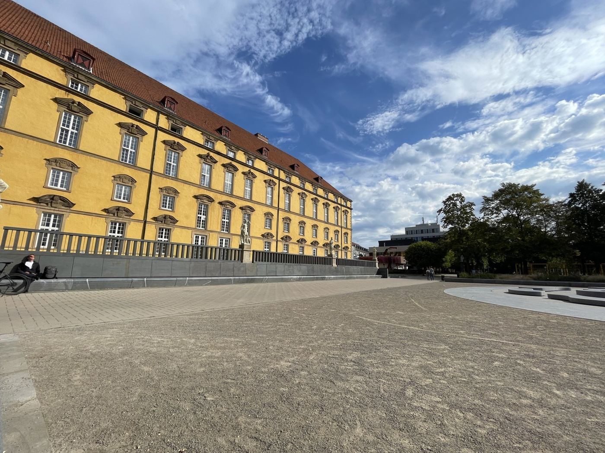
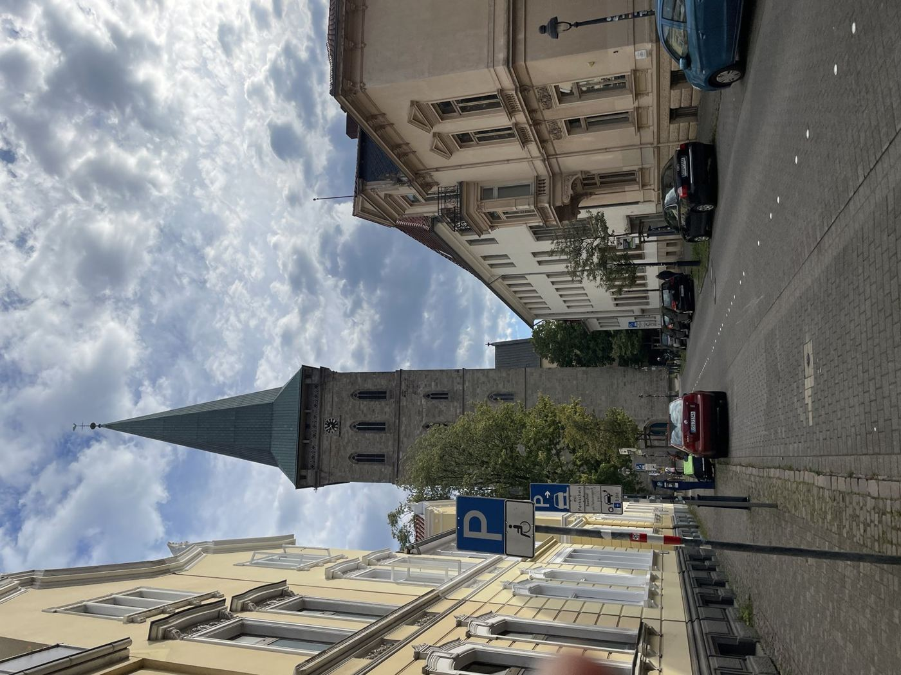

ドイツ留学よくある質問
山田恵 · オスナブリュック大学 · 2026年10月11日 · 約8分
このコラムでは、note「留学するならドイツ」執筆者の山田恵が、ドイツ留学出願・渡航にあたってよく聞かれる質問5問にお答えしていきます。前例の少ないドイツ留学は、情報を集めることも一苦労だと思います。私たちの経験に限りますが、気軽に相談してみてください。
1. 国内で通っていた大学が無名でも、あるいはGPAが低くても出願できますか？
大学の知名度だけで、ドイツ留学を諦める必要はありません。私が修士課程への出願で大事だと感じたのは、学びたい分野について基礎的な知識や一貫した経験があり、必要なバックグラウンドを持っていると、自分の言葉で伝えることです。
修士で勉強したいことにつながる学習を学部時代にしていれば、それを強みにできます。学びたい学問に関連する実務経験も、アピールポイントになります。専攻名が完全に同じでなくても、関連する履修や経験をどう結び付けるかを考えてみてください。
ただし、GPA（成績評価の平均値）や必要単位数、語学資格などの条件は、大学・コースごとに異なります。最低成績や特定分野の単位数が指定されている場合は、志望理由だけで置き換えられません。まず募集要項を確認し、その上で自分の強みを志望コースに結び付けて伝える準備をしましょう。
2. いつ頃ドイツに出願して、セメスターはいつ頃始まりますか？
冬セメスター（冬学期）は、多くの大学で10月頃に始まります。最初の時期にはウェルカムウィークやオリエンテーションが行われます。春に始まる夏学期から入学できるコースもあるので、詳しくは志望コースの公式サイトを確認してください。
出願は早めに準備するに越したことはありません。学校ごとに必要書類が違い、志望理由を書くのにも時間がかかるからです。私は4月から8月にかけて出願準備や結果の確認を進め、8月にオスナブリュック大学から合格をもらいました。
出願窓口には、大学へ直接申請する方式と、uni-assist（海外の学歴・出願書類を審査する機関）を経由する方式などがあります。uni-assistの審査結果は、大学の最終的な合否判定そのものではありません。
オスナブリュック大学のConflict Studies and Peacebuilding修士の例
外国の学位による冬学期出願は、通常4月1日〜6月15日（uni-assist）。締切・窓口は応募する年度の公式案内で確認してください。
- 出願前学歴・成績・履修内容・語学証明と志望理由を準備
- 指定の出願期間大学またはuni-assistへ書類を提出
- 審査・結果通知審査状況、大学の合否、入学登録期限を確認
- 合格後〜秋住居・保険・滞在手続きを進め、オリエンテーション・授業へ
合否の連絡時期は、人やコースによって前後します。案内された時期を過ぎても連絡がない場合や、結果の理由に疑問がある場合は、大学の入学担当者に英語やドイツ語で問い合わせてみてもよいと思います。

3. ビザを日本で申請してから渡航することはできないのですか？
もちろん、日本で学生ビザを取得してから渡航することもできます。必要書類が揃い、渡航までに時間の余裕があれば、現地での心配を減らせる選択肢です。
私の場合は2023年の渡航前、8月頭に東京で予約が取れました。ただ、9月末の渡航までにパスポートの返却が間に合うか分からなかったため、予約を取り下げました。これは当時の私の経験です。
現在の駐日ドイツ大使館・総領事館の案内では、大学留学の学生ビザは領事サービスポータルでのオンライン申請から進めます。書類の完備が確認されてから、原本提示・指紋等のための来館予約へ進む仕組みです。入学許可通知、資金証明、医療保険の加入証明などを、公式の必要書類一覧に沿って準備してください。
日本国籍の方は、ビザなしでドイツへ入国した後、現地で留学の滞在許可を申請することもできます。ただし、現地の外国人局の予約・審査にも時間がかかる場合があります。入国後は早めに住民登録と申請準備を進め、入国から90日以内に管轄の外国人局へ申請してください。
日本で申請するか、現地で申請するかは、書類の準備状況、渡航日、滞在先の手続きによって判断します。私の経験を共有することはできますが、予約の取りやすさや審査期間は、その時の公式案内と管轄窓口で確認してください。
4. 現地でアルバイトをするのは難しいですか？ ハイレベルなドイツ語が必要ですか？
必ずしもそうではありません。私は、ドイツ語の一番下のクラスにいながら飲食店で働いていた交換留学生を何人も見たことがあります。私自身もドイツ語はB1レベルでしたが、日本語の家庭教師のアルバイトをしていました。
日本語を教えていた現地の生徒とは家族ぐるみでお世話になり、とてもよい経験になりました。二度のインターンシップはほとんど英語でしたが、ドイツ語を使う機会もありました。仕事によって必要な言語は違うので、募集要項を見てみてください。
学生の滞在許可で働く場合は、許可に付く就労条件を確認します。一般的な留学生の雇用には、年間140日（全日）または280日（半日）などの上限があります。ミニジョブ（一定の収入上限内の仕事）も、滞在許可上の制限とは別に確認が必要です。家庭教師などを自営業・フリーランスとして行う場合は、外国人局の許可を確認してください。
仕事の探し方や言語の使い方も、ぜひこの機会にいろいろ挑戦してみてください。日系のラーメン屋さんで働いていた交換留学生にインタビューした記事もあります。アルバイト体験のインタビューを読む →
5. ドイツで学ぶことに治安面で不安があります。人種差別など嫌な思いをした経験はありますか？
あります。ただ、差別のようなトラブルに慣れる必要はありません。差別は決して許されることではなく、留学者自身に問題があるわけではないからです。
そのような経験をしたら、一人で抱え込まず、現地の友人や他の留学生に話して共有することが大切です。同じような経験をしていて寄り添ってくれる人もいますし、一緒に声を上げてくれる人もいます。英語を話すことに対して冷たい態度を取られたと話す留学生もいました。
住む場所を考えるときには、大学の留学生支援、周辺の雰囲気、通学経路、夜間の交通などを調べてみてください。政治や社会の動きに目を向けることも、その地域を理解する手がかりになります。ただし、地域や選挙結果だけで個人の態度や安全性が決まるわけではありません。
困ったときには、大学のInternational Office（留学生支援窓口）や相談窓口も頼ってください。安心して学べる環境を、自分だけで抱え込まずに探していきましょう。
出願準備や現地での暮らしについて、私自身が経験したことをお伝えします。気になっていることがあれば、気軽に相談してみてください。
山田恵のプロフィール・相談予約へ